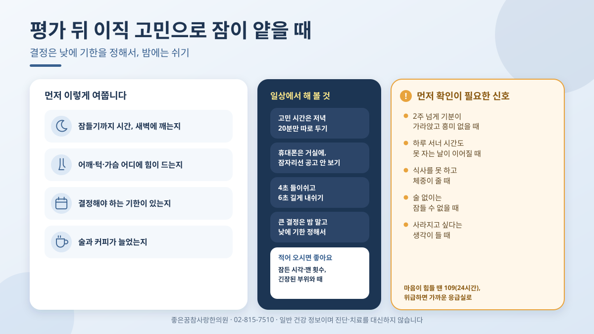

이종호 한의사 감수좋은꿈참사랑한의원 대표원장 (한의사 면허번호 19769)발행 2026-11-27 · 수정 2026-11-27
이 글의 차례
연말 인사 평가나 성과 면담에서 기대보다 낮은 결과를 듣고 나면, 서운함과 억울함, '여기 계속 있어야 하나' 하는 고민이 한꺼번에 밀려옵니다. 퇴근길에도 면담 장면이 머릿속에서 되풀이되고, 잠자리에 누워서는 채용 공고를 뒤적이다 새벽에 깨어 다시 생각에 빠지며, 낮에는 어깨와 턱에 힘이 들어간 채 하루를 보내는 분이 많습니다.
이런 반응은 중요한 일을 앞둔 사람에게 흔히 나타나는 긴장으로, 그 자체로 이상한 것은 아닙니다. 다만 잠이 무너진 상태에서는 같은 고민도 더 크고 막막하게 느껴지고, 지친 머리로 내린 결정은 나중에 아쉬움으로 남기 쉽습니다.
그래서 먼저 고민하는 시간과 쉬는 시간을 나누고, 결정은 낮에 기한을 정해 차근차근 내리며, 그사이 잠과 몸의 긴장을 돌보는 순서를 권합니다. 2주 넘게 잠을 거의 못 자거나, 아무것도 하기 싫고 사라지고 싶다는 생각이 든다면 혼자 견디지 말고 109에 도움을 청하세요.
왜 평가 결과 뒤에는 잠과 몸이 함께 흔들릴까요
- 평가는 한 해 동안의 노력에 대한 이야기라서, 결과가 기대에 못 미치면 일에 대한 실망뿐 아니라 '나를 어떻게 보고 있나' 하는 서운함이 함께 올라옵니다. 이런 감정은 쉽게 정리되지 않고 생각이 같은 자리를 맴돌게 만듭니다.
- 이직할지 남을지 같은 고민은 답이 바로 나오지 않는 문제입니다. 정보는 부족하고 따질 것은 많아, 머리는 계속 해결할 방법을 찾느라 쉬지 못합니다.
- 긴장이 이어지면 몸은 싸우거나 피할 준비를 하듯 어깨가 올라가고, 이를 악물며, 숨이 얕고 빨라집니다. 그래서 뒷목과 턱이 뻐근하고 가슴이 답답하며 속이 더부룩한 느낌이 함께 올 수 있습니다.
- 잠자리에 누우면 낮 동안 미뤄 둔 생각이 한꺼번에 떠오르기 쉽고, 휴대폰으로 채용 공고나 회사 평판을 찾아보면 머리가 더 깨어납니다.
- 새벽 4~5시쯤 깨어 다시 잠들지 못하는 것도 걱정이 많을 때 흔히 보이는 모습입니다. 새벽에 떠오르는 생각은 낮보다 어둡고 크게 느껴지는 경향이 있습니다.
- 12월은 송년회와 마감이 겹쳐 술자리가 늘고 잠이 줄어드는 시기라, 이미 지친 몸에 부담이 더해집니다.
- 한의학에서는 생각이 많고 마음이 뜻대로 풀리지 않을 때 기운이 한곳에 맺혀 가슴이 답답하고 한숨이 잦아지는 모습을 간기울결로 설명하기도 하고, 걱정이 길어지면 비위가 약해져 입맛이 떨어지고 잠이 얕아진다고 보기도 합니다.
먼저 이렇게 여쭙니다
- 평가 결과를 들은 지 얼마나 되었는지, 그 뒤로 잠과 식사가 어떻게 달라졌는지 여쭙니다.
- 잠들기까지 걸리는 시간, 밤중이나 새벽에 깨는 횟수, 깼을 때 어떤 생각이 드는지 여쭙니다.
- 어깨, 뒷목, 턱, 가슴, 명치 가운데 어디에 힘이 들어가거나 답답한지 여쭙니다.
- 이직을 실제로 알아보고 있는지, 결정해야 하는 기한이 있는지 여쭙니다.
- 고민을 털어놓을 수 있는 사람이 있는지, 가족과는 이야기를 나눴는지 여쭙니다.
- 술이나 커피, 담배가 늘었는지, 잠을 위해 무엇을 먹거나 마시고 있는지 여쭙니다.
- 예전에도 큰 변화 앞에서 잠과 마음이 비슷하게 흔들린 적이 있었는지 여쭙니다.
- 아무것도 하기 싫거나 사라지고 싶다는 생각이 든 적이 있는지도 조심스럽게 여쭙니다.
일상에서 먼저 해 볼 수 있는 것
결정하는 방식 정리하기
- 큰 결정은 밤에 하지 않습니다. 잠이 부족하고 지친 밤에는 생각이 극단으로 흐르기 쉬워, 떠오른 생각은 메모만 하고 결론은 다음 날 낮으로 미룹니다.
- 결정 기한을 정합니다. '1월 말까지 정보를 모으고 2월 첫 주에 정한다'처럼 날짜를 달력에 적어 두면, 매일 밤 결론을 내려야 한다는 압박이 줄어듭니다.
- 종이 한 장을 반으로 나눠 '남는다면 좋은 점과 걱정', '옮긴다면 좋은 점과 걱정'을 적습니다. 그리고 각 항목 옆에 '확인된 사실'인지 '내 짐작'인지 표시합니다. 짐작이 많다면 결정보다 정보를 모으는 단계가 먼저입니다.
- 평가 이유가 납득되지 않는다면 감정이 조금 가라앉은 뒤 상사나 인사 담당자에게 구체적인 설명을 듣는 면담을 요청해 봅니다. 이유를 알면 막연한 서운함이 조금 정리되기도 합니다.
생각하는 시간 따로 두기
- 하루 중 15~20분, 예를 들어 저녁 7시 반부터 8시 사이를 '고민 시간'으로 정합니다. 그 시간에는 마음껏 생각하고 적되, 다른 시간에 고민이 떠오르면 '저녁 고민 시간에 보자'며 메모만 하고 넘깁니다.
- 고민 시간은 잠자리에 드는 시각과 두 시간 이상 떨어지게 잡습니다.
- 채용 공고나 회사 평판 검색도 이 시간 안에서만 합니다.
잠자리 정리하기
- 잠들기 1시간 전부터 휴대폰은 거실에 두고 충전합니다. 알람은 따로 시계를 쓰면 좋습니다.
- 자기 전 10분 동안 따뜻한 물로 샤워하거나 발을 담그고, 조명을 낮춘 방에서 가볍게 몸을 풉니다.
- 누운 뒤 20분이 지나도 잠이 오지 않으면 일어나 어두운 거실에서 조용한 음악을 듣거나 종이책을 몇 쪽 읽다가 졸릴 때 다시 눕습니다.
- 새벽에 깨어 생각이 몰려오면 시계를 보지 말고, 머리맡 메모지에 한 줄 적은 뒤 '아침에 보자'고 내려놓습니다.
- 잠을 청하려고 술을 마시지 않습니다. 술은 잠드는 것을 돕는 것 같아도 새벽에 깨는 일을 늘리기 쉽습니다.
몸의 긴장 풀기
- 점심 뒤와 퇴근 직후에 어깨를 귀 쪽으로 5초 끌어올렸다가 툭 떨어뜨리기를 다섯 번 합니다.
- 이를 악물고 있는지 하루에 몇 번 확인합니다. 입술은 닫고 윗니와 아랫니는 살짝 떨어진 채 혀를 입천장에 가볍게 붙이는 자세가 편합니다.
- 가슴이 답답할 때는 4초 동안 코로 들이마시고 6초 동안 입으로 길게 내쉬기를 5분 정도 합니다. 내쉬는 숨을 길게 하는 것이 요령입니다.
- 퇴근 뒤 동네를 15~20분 걷습니다. 상도동처럼 언덕이 많은 동네라면 평지 위주로 천천히 걸어도 충분합니다.
끼니와 카페인 챙기기
- 입맛이 없더라도 아침과 점심은 거르지 않고 조금이라도 먹습니다. 빈속에 커피만 마시면 가슴 두근거림과 초조함이 더 커질 수 있습니다.
- 오후 2시 이후에는 커피와 에너지 음료를 줄이고, 따뜻한 보리차나 물로 바꿉니다.
사람과 이어지기
- 믿을 만한 사람 한 명에게 지금 상황을 이야기합니다. 해결책을 듣기보다 '요즘 이런 일로 마음이 복잡하다'고 말하는 것만으로도 머릿속이 조금 정리되기도 합니다.
- 연말 모임은 다 가기보다 편한 자리 몇 개만 골라 나갑니다.
상황별 예시
- 예를 들어 열심히 했다고 생각한 해에 평가 등급이 기대보다 낮게 나온 30대 직장인이, 그 뒤로 매일 밤 면담 장면을 되새기며 새벽 2시까지 채용 공고를 보다가 아침에 겨우 일어나는 경우, 고민과 검색을 저녁 '고민 시간' 20분 안으로 옮기고 휴대폰을 거실에 두는 것부터 시작합니다. 결정 기한을 1월 말로 정해 두면 매일 밤 결론을 내지 않아도 된다는 여유가 생깁니다.
- 예를 들어 다른 회사에서 제안을 받았는데 지금 회사의 평가 결과와 겹쳐 마음이 흔들리고, 출근길마다 가슴이 답답하고 점심이 잘 넘어가지 않는 경우, 두 선택지를 종이에 나눠 적고 '확인된 사실'과 '내 짐작'을 구분해 봅니다. 연봉이나 업무처럼 확인할 수 있는 것은 직접 물어 정보를 채우고, 가슴 답답함에는 내쉬는 숨을 길게 하는 호흡을 하루 두 번 해 봅니다.
- 예를 들어 평가 뒤 팀장과의 면담을 앞두고 며칠째 이를 악문 채 자서 아침마다 턱과 관자놀이가 뻐근한 경우, 낮 동안 이를 악무는 순간을 알아차리는 연습과 잠들기 전 턱과 어깨를 풀어 주는 시간을 넣어 봅니다. 면담에서 물어볼 것을 미리 세 가지만 적어 가면 긴장이 조금 덜할 수 있습니다.
- 예를 들어 평가 결과를 들은 뒤 3주가 넘도록 잠을 하루 서너 시간밖에 못 자고, 좋아하던 일에도 흥미가 없으며, 출근할 생각만 해도 눈물이 나는 경우에는 생활 조절만으로 버티기보다 진료실에서 그 이야기를 먼저 꺼내 주세요.
자주 하는 오해
- 이 정도로 힘들어하는 건 내가 약해서라고 여기는 분이 많지만, 평가와 진로 고민은 누구에게나 큰 스트레스이고 잠과 몸이 흔들리는 것은 자연스러운 반응입니다.
- 빨리 결정해 버리면 편해질 거라고 생각해 지친 밤에 사직 메일을 쓰는 분도 있습니다. 결정은 충분히 쉰 낮에, 정해 둔 기한에 내리는 편이 아쉬움이 적습니다.
- 술을 마시면 잠이 잘 온다고 여기기 쉽지만, 술은 새벽에 깨는 일을 늘리고 다음 날 기분을 더 가라앉게 할 수 있습니다.
- 고민을 털어놓으면 약점을 보이는 것 같아 혼자 삭이는 분도 있습니다. 믿을 만한 한 사람에게 말하는 것만으로도 생각이 정리되는 경우가 많습니다.
- 몸이 뻐근한 건 마음과 상관없다고 여기기 쉽지만, 긴장이 이어지면 어깨와 턱, 명치가 먼저 굳는 분이 많습니다.
스스로 점검해 보세요
- 잠자리에 누워 30분 넘게 평가나 이직 생각을 하는 날이 일주일에 세 번 이상이다.
- 새벽에 깨면 다시 잠들기 어렵다.
- 잠들기 직전까지 채용 공고나 회사 이야기를 휴대폰으로 본다.
- 하루에도 몇 번씩 이를 악물거나 어깨가 올라가 있는 것을 알아차린다.
- 가슴이 답답하고 한숨이 잦아졌다.
- 입맛이 떨어지거나 반대로 단 음식과 야식이 늘었다.
- 잠을 위해 술을 마시는 날이 늘었다.
- 결정 기한 없이 매일 밤 결론을 내리려고 애쓴다.
한의원에서 함께 살필 수 있는 경우
- 마음의 고민과 함께 어깨, 뒷목, 턱이 굳고 가슴이 답답한 몸의 불편이 2주 넘게 이어지는 경우
- 잠드는 데 오래 걸리거나 새벽에 깨는 일이 반복되어 낮에 집중이 어려운 경우
- 긴장하면 속이 더부룩하고 입맛이 떨어지는 등 소화 불편이 함께 오는 경우
- 다른 병원 진료를 받으면서 몸의 긴장과 생활 리듬도 함께 살피고 싶은 경우
좋은꿈참사랑한의원에서는 첫 방문 때 요즘 마음을 무겁게 하는 일과 잠, 식사, 몸의 불편을 차례로 여쭙니다. 평가 내용이나 회사 사정을 자세히 말씀하지 않으셔도 되고, 편하신 만큼만 이야기하시면 됩니다. 그다음 맥부터 짚어 보고, 혀와 배, 어깨와 목의 긴장 정도를 함께 살펴 몸이 지금 얼마나 긴장해 있는지 확인합니다.
그 뒤 잠자리 정리와 고민 시간 나누기, 호흡과 걷기처럼 생활에서 해 볼 것을 함께 정하고, 필요하면 침이나 한약을 상의합니다. 다음 진료에서는 지난번 이야기를 이어서 여쭙고, 잠과 긴장이 어떻게 달라졌는지 기록을 함께 봅니다. 진료실이 잠시라도 마음을 내려놓고 쉬다 가는 곳이 되었으면 합니다.
얼마나 지켜보고 언제 상담할까요
- 고민 시간 나누기와 잠자리 정리를 2주쯤 해 보며 잠드는 시간과 깨는 횟수를 기록합니다.
- 평가 직후 한두 주는 마음이 흔들리는 것이 자연스럽습니다. 시간이 지나며 잠과 식사가 조금씩 돌아오는지 지켜봅니다.
- 2주가 지나도 잠이 계속 무너져 있거나, 몸의 긴장 때문에 일상이 불편하다면 상담을 받아 보세요.
- 아래 신호가 있으면 기다리지 말고 도움을 청합니다.
이렇게 기록해 오시면 상담이 쉬워집니다
- 2주 동안의 잠드는 시각, 깬 횟수와 시각, 일어난 시각
- 하루 중 몸이 가장 긴장된 때와 부위(어깨, 턱, 가슴, 명치)
- 식사량과 입맛 변화, 술과 커피 양
- 결정해야 하는 일과 기한(말씀하실 수 있는 만큼)
- 예전에 비슷한 시기를 어떻게 지나왔는지
- 복용 중인 약과 영양제
이런 증상은 먼저 확인이 필요합니다
- 2주 넘게 거의 매일 기분이 가라앉고, 좋아하던 일에도 흥미가 없는 경우
- 잠을 하루 서너 시간도 자지 못하는 날이 일주일 넘게 이어지는 경우
- 스스로를 해칠 생각이 들면 ☎ 109로 바로 연락하세요.
이런 신호가 있으면 한의원보다 가까운 병원이나 응급실을 먼저 찾으세요.
관련 글
- 연말 인사 발표나 평가 결과를 기다리는 동안 잠들기 어렵고 새벽에 자주 깰 때는 어떻게 살피나요?
- 이직이나 퇴사를 앞두고 앞날 걱정으로 잠이 얕아질 때는 어떻게 하나요?
- 일요일 저녁만 되면 출근 걱정에 가슴이 답답하고 잠이 안 올 때는 어떻게 하나요?

여쭙는 것
- 평가 결과를 들은 지 얼마나 되었는지, 그 뒤로 잠과 식사가 어떻게 달라졌는지 여쭙…
- 잠들기까지 걸리는 시간, 밤중이나 새벽에 깨는 횟수, 깼을 때 어떤 생각이 드는지…
- 어깨, 뒷목, 턱, 가슴, 명치 가운데 어디에 힘이 들어가거나 답답한지 여쭙니다.
생활에서 해 볼 것
- 큰 결정은 밤에 하지 않습니다. 잠이 부족하고 지친 밤에는 생각이 극단으로 흐르기…
- 결정 기한을 정합니다. '1월 말까지 정보를 모으고 2월 첫 주에 정한다'처럼 날짜…
- 종이 한 장을 반으로 나눠 '남는다면 좋은 점과 걱정', '옮긴다면 좋은 점과 걱정…
한의원에서 함께 살필 것
- 마음의 고민과 함께 어깨, 뒷목, 턱이 굳고 가슴이 답답한 몸의 불편이 2주 넘게…
- 잠드는 데 오래 걸리거나 새벽에 깨는 일이 반복되어 낮에 집중이 어려운 경우
- 긴장하면 속이 더부룩하고 입맛이 떨어지는 등 소화 불편이 함께 오는 경우
먼저 확인이 필요한 신호
- 2주 넘게 거의 매일 기분이 가라앉고, 좋아하던 일에도 흥미가 없는 경우
- 잠을 하루 서너 시간도 자지 못하는 날이 일주일 넘게 이어지는 경우
- 스스로를 해칠 생각이 들면 109로 바로 연락하세요.
한눈에 보는 표
| 구분 | 핵심 |
|---|---|
| 여쭙는 것 | 평가 결과를 들은 지 얼마나 되었는지, 그 뒤로 잠과 식사가 어떻게 달라졌는지 여쭙니다. 잠들기까지 걸리는 시간, 밤중이나 새벽에 깨는 횟수, 깼을 때 어떤 생각이 드는지 여쭙니다. |
| 생활에서 해 볼 것 | 큰 결정은 밤에 하지 않습니다. 잠이 부족하고 지친 밤에는 생각이 극단으로 흐르기 쉬워, 떠오른 생각은 메모만 하고 결론은 다음 날 낮으로 미룹니다. 결정 기한을 정합니다. '1월 말까지 정보를 모으고 2월 첫 주에 정한다'처럼 날짜를 달력에 적어 두면, 매일 밤 결론을 내려야 한다는 압박이 줄어듭니다. |
| 한의원에서 함께 살필 것 | 마음의 고민과 함께 어깨, 뒷목, 턱이 굳고 가슴이 답답한 몸의 불편이 2주 넘게 이어지는 경우 잠드는 데 오래 걸리거나 새벽에 깨는 일이 반복되어 낮에 집중이 어려운 경우 |
| 먼저 확인이 필요한 신호 | 2주 넘게 거의 매일 기분이 가라앉고, 좋아하던 일에도 흥미가 없는 경우 잠을 하루 서너 시간도 자지 못하는 날이 일주일 넘게 이어지는 경우 |
자주 묻는 질문
평가 결과 하나로 이렇게까지 잠을 못 자는 게 이상한 건가요?
한 해의 노력에 대한 평가라 실망과 서운함이 크게 오는 것은 자연스럽습니다. 대개 시간이 지나며 조금씩 돌아오지만, 2주가 넘도록 잠이 무너져 있다면 상담을 받아 보세요.
이직을 할지 말지 한의원에서 조언해 주나요?
진로에 대한 결정은 본인이 내리는 것이고, 한의원에서는 그 결정을 앞둔 시기의 잠과 몸의 긴장, 소화처럼 몸과 마음의 상태를 함께 살핍니다. 결정을 서두르지 않도록 생활의 순서를 함께 정리해 드립니다.
새벽에 깨서 생각이 멈추지 않을 때는 어떻게 하나요?
시계를 보지 말고, 머리맡 메모지에 떠오른 생각을 한 줄 적은 뒤 아침에 보자고 내려놓습니다. 20분이 지나도 잠이 오지 않으면 잠시 일어나 어두운 곳에서 조용히 있다가 졸릴 때 다시 눕습니다.
이를 악물고 자서 턱이 아픈데 같이 봐 주나요?
긴장이 이어지면 턱과 어깨, 뒷목이 함께 굳는 경우가 많아 진료 때 함께 살핍니다. 입을 벌릴 때 턱에서 소리가 나고 아프거나 입이 잘 벌어지지 않는다면 치과 진료가 함께 필요할 수 있습니다.
진료실에서 회사 이야기를 해도 괜찮을까요?
편하신 만큼만 말씀하시면 됩니다. 저는 평가 내용보다 그 일 뒤로 잠과 식사, 몸의 긴장이 어떻게 달라졌는지가 더 궁금합니다. 이야기하신 내용은 본인 동의 없이 다른 사람에게 알리지 않습니다.
좋은꿈참사랑한의원은 재진 때 지난번 이야기부터 이어서 여쭙니다. 진료시간과 예약은 오시는 길에서 확인하세요.
어디서 상담받을 수 있나요?
좋은꿈참사랑한의원은 서울 동작구 만양로2길 2 신성빌딩 3층·5층(서울 동작구 상도동, 7호선 상도역 3번 출구 근처)에 있습니다. 한의사 3명(이종호 대표원장, 조영기 수석진료원장, 정원영 진료원장)이 진료합니다. 진료시간은 평일 09:30~20:00(점심 13:00~14:00), 토·일·공휴일 09:30~15:00이며, 방문 전 전화로 확인을 권합니다. 예약은 네이버 예약, 카카오톡 상담, 전화 02-815-7510로 받습니다.
이 글은 일반적인 건강 정보이며 개인의 진단이나 치료를 대신하지 않습니다. 증상이 있거나 복용 중인 약이 있다면 진료를 통해 확인하세요. 치료 효과는 개인마다 다를 수 있습니다.
작성 기준: 일반적으로 알려져 있는 건강 정보를 참고해 정리했습니다(대표원장 감수). 증상 기록은 1~2주 동안 하루 1회, 비슷한 시간에 적어 오시면 지난 상태와 비교하기 쉽습니다.